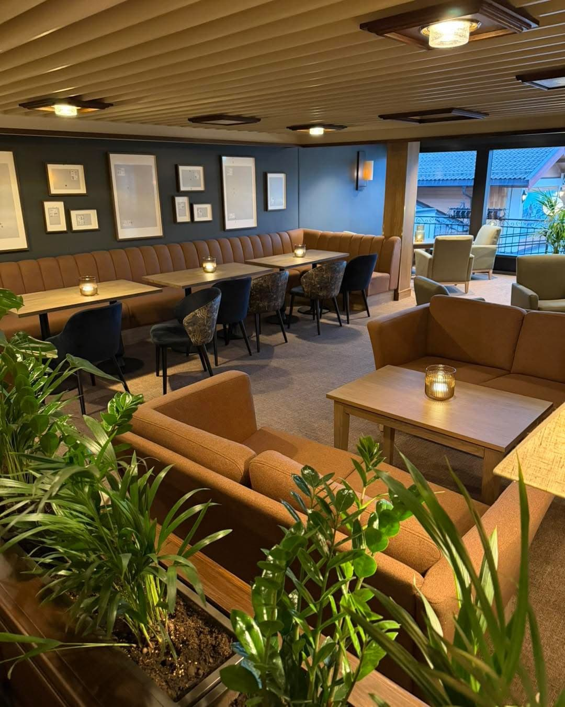
Fram Bar og pianobar
Møteplassen for kaffe, cocktails, gode samtaler og lette retter – før og etter dagens opplevelser.
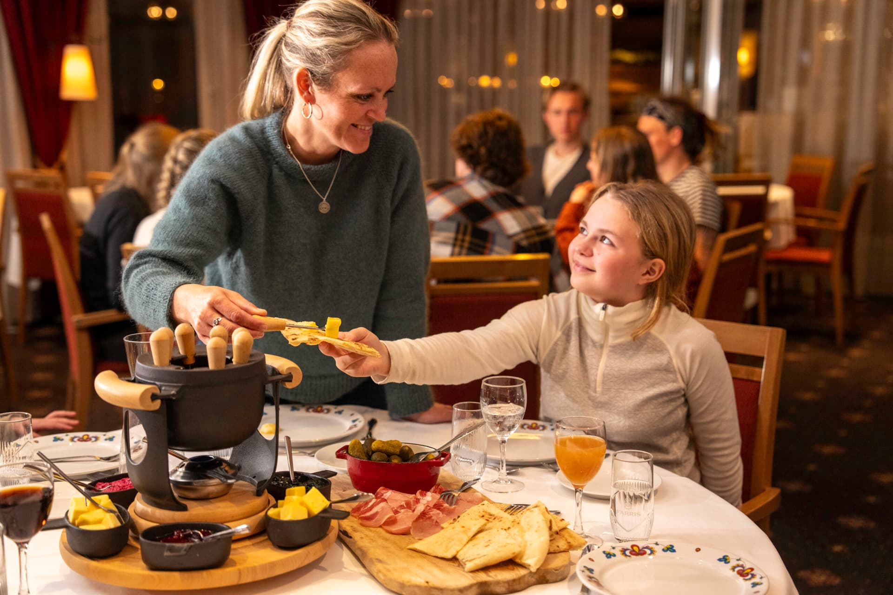
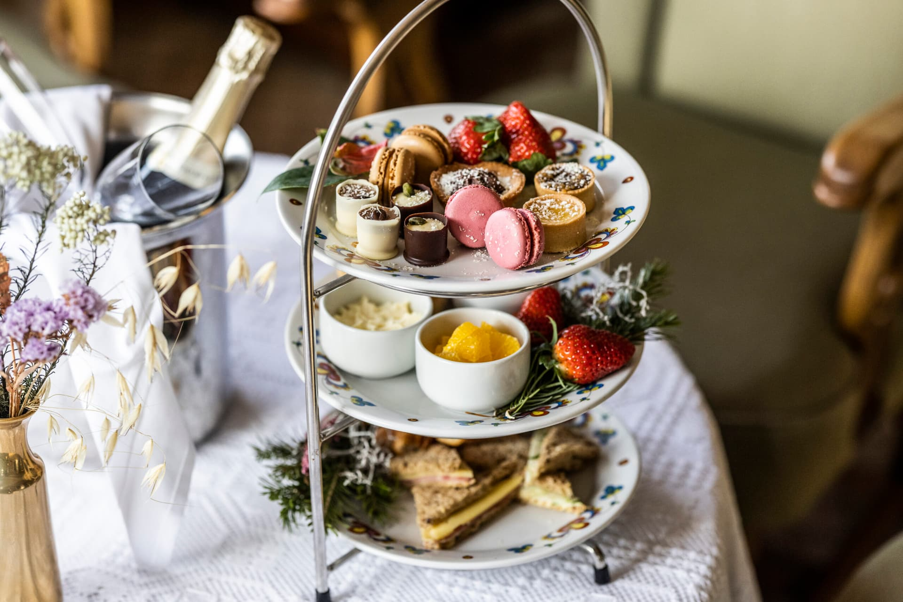
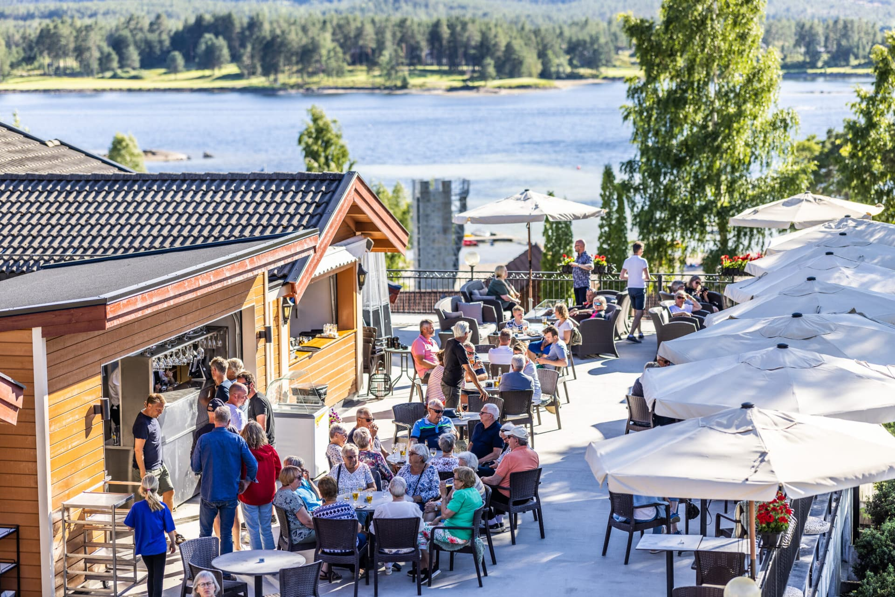
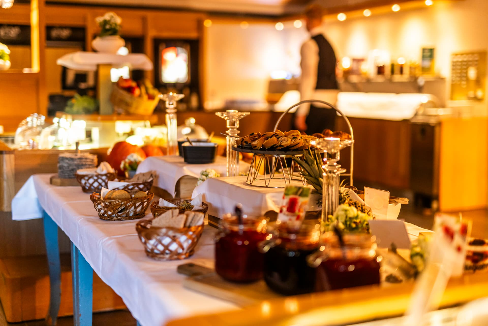
I Vrådal er maten en naturlig del av opplevelsen. Lokale råvarer, retter med røtter i tradisjonen og måltider med utsikt over vakre Nisser – i hver eneste sesong.
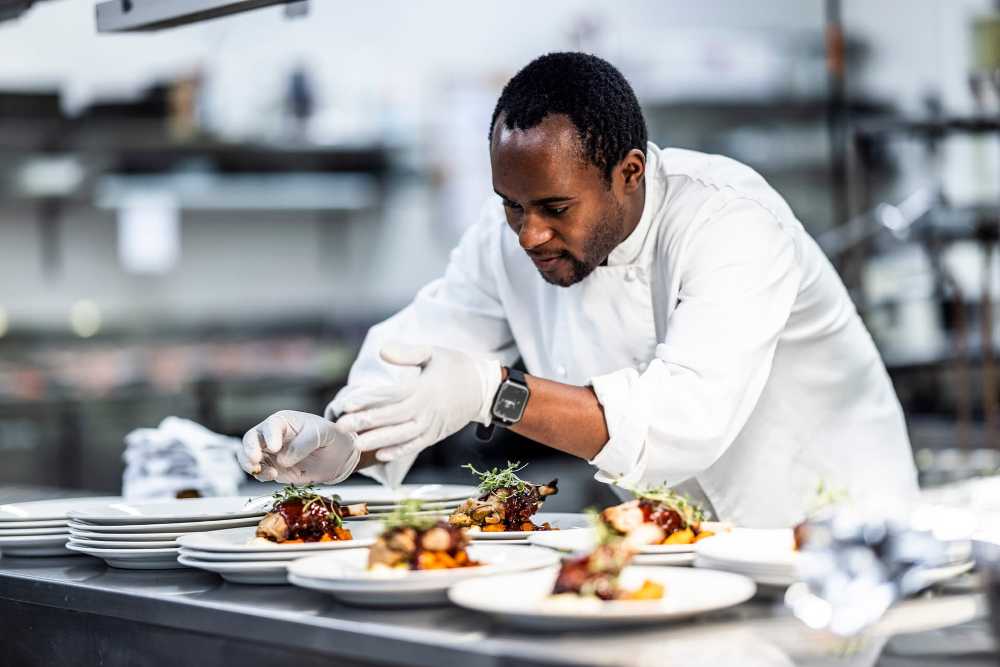
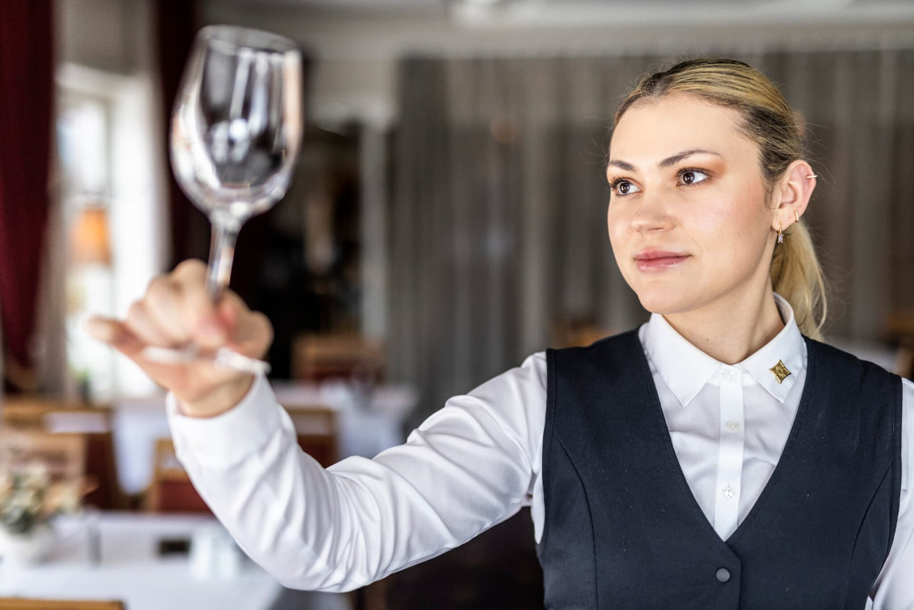
Hotellets hovedrestaurant byr på en innholdsrik frokostbuffet og middag med utsikt over Nisser. Kjøkkenet henter inspirasjon fra naturen rundt oss og tradisjonene vi står i – det vi kaller smaken av Fjell-Telemark.
Fra pianobar og cocktails til is i solen ved vannkanten – her er stedene for gode stunder.

Møteplassen for kaffe, cocktails, gode samtaler og lette retter – før og etter dagens opplevelser.
Lunsj, drinker og tapas med panoramautsikt – og Telemarks vakreste solnedgang.
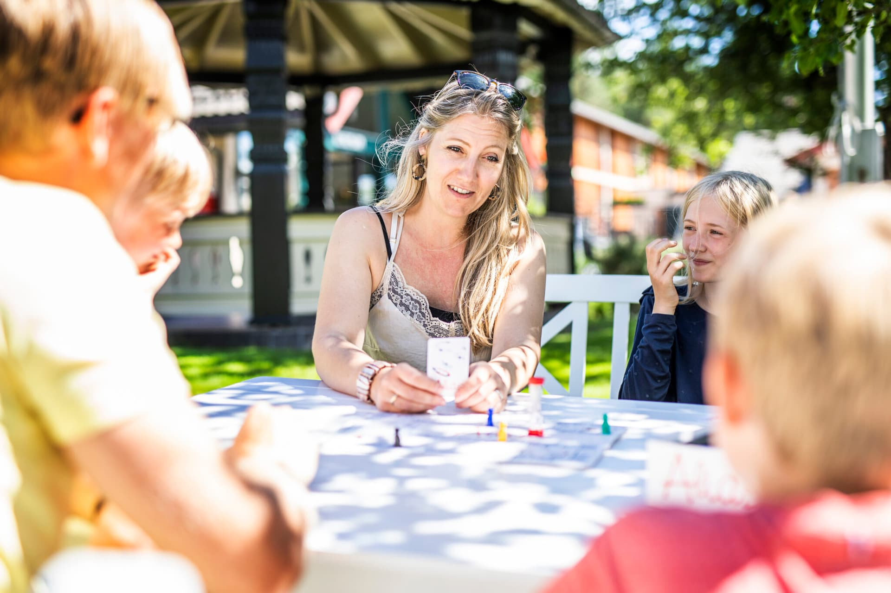
Uterommet midt i den blomstrende hagen, med lange lunsjer, grill og sommermeny.

Bad, sol, is og enkel sommermat rett ved vannet – med SUP, kajakk og trampoline.
Noen måltider handler om mer enn maten. Her er opplevelsene gjestene våre snakker om lenge etterpå.
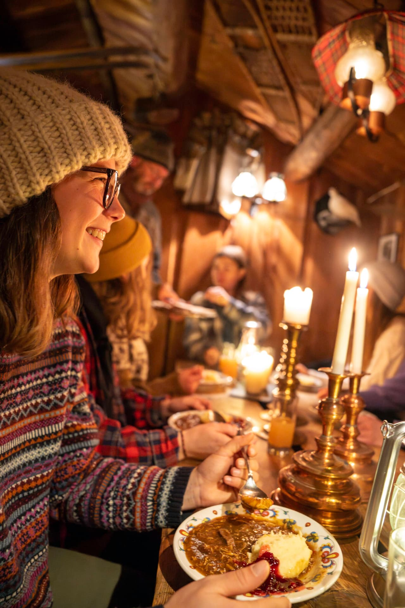
Det historiske stabburet blir om vinteren innredet som en koselig fangsthytte – «Norges minste vertshus» – der vi serverer tradisjonsrik viltgryte.
Bestill nåSamle familien eller vennegjengen rundt en sosial fondue med varm stemning etter en lang dag i snøen.
Bestill nå
Gå på truger i fjellsiden, fyr opp bålet og kok kaffe på kjelen på den tradisjonelle måten.
Bestill nåServert i den flotte peisestua eller i Blåsalongen. Ro og nytelse som garantert lader flate batterier.
Bestill bord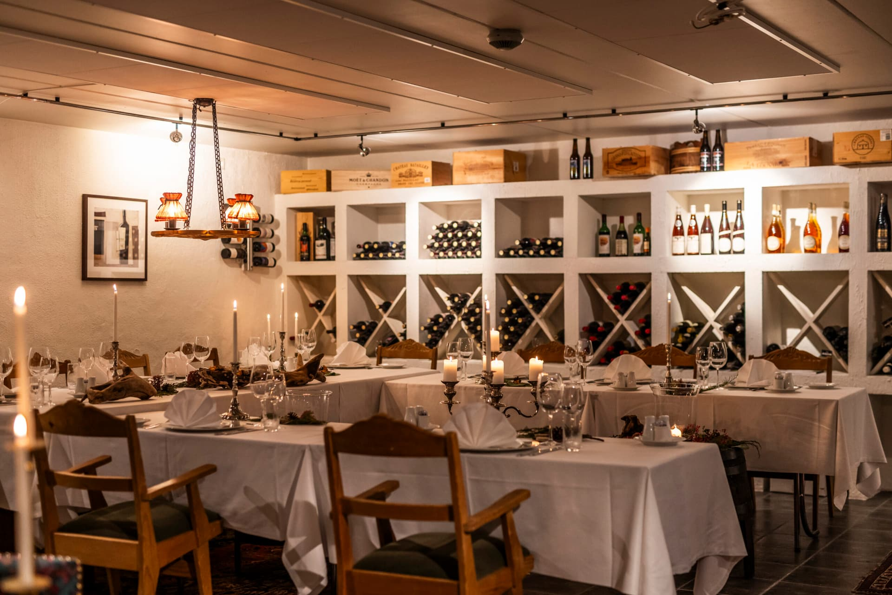
En stemningsfull, historisk vinkjeller for private middager, vinsmaking og mindre selskap.
Spør oss
Veteranbåten fra 1909 tar deg med på en båttur med servering og utsikt til Europas høyest beliggende sluser.
Les mer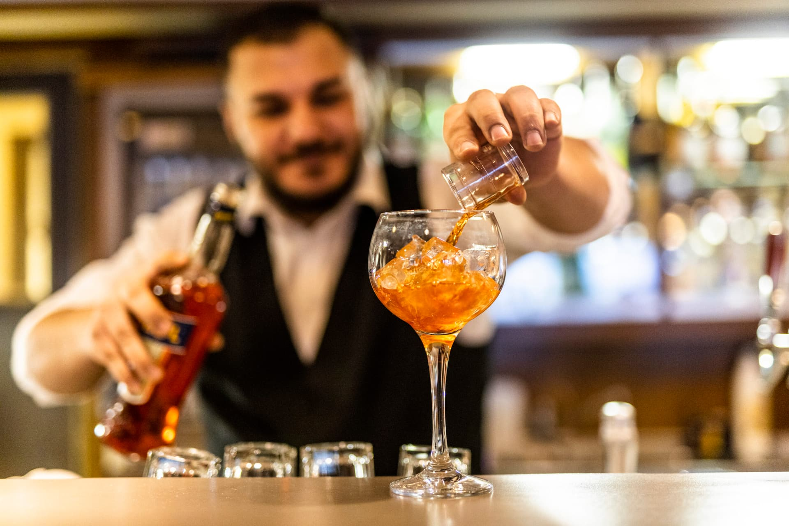
Vertskapet forteller historien om Straand og Vrådal – helt tilbake til skysstasjonen i 1864.
Spør oss
Telemark er kjent for frukten sin, og om våren blomstrer trærne langs vannet. Om sommeren og høsten er det fint å kombinere en tur med gårdsbesøk og smaking.